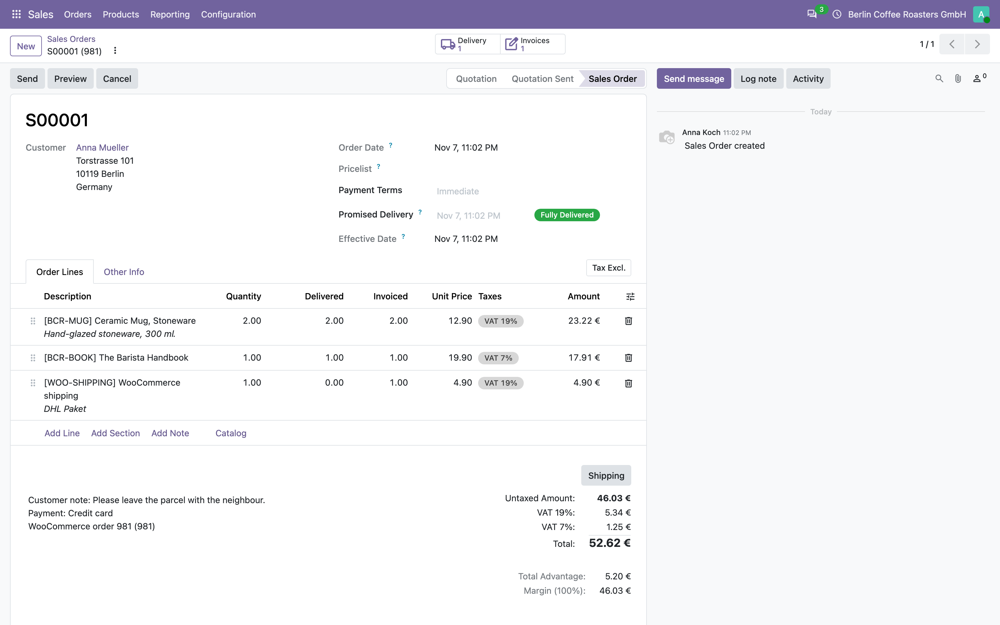
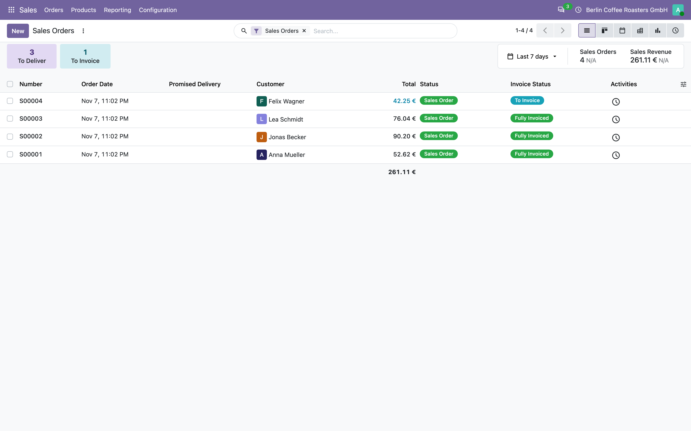
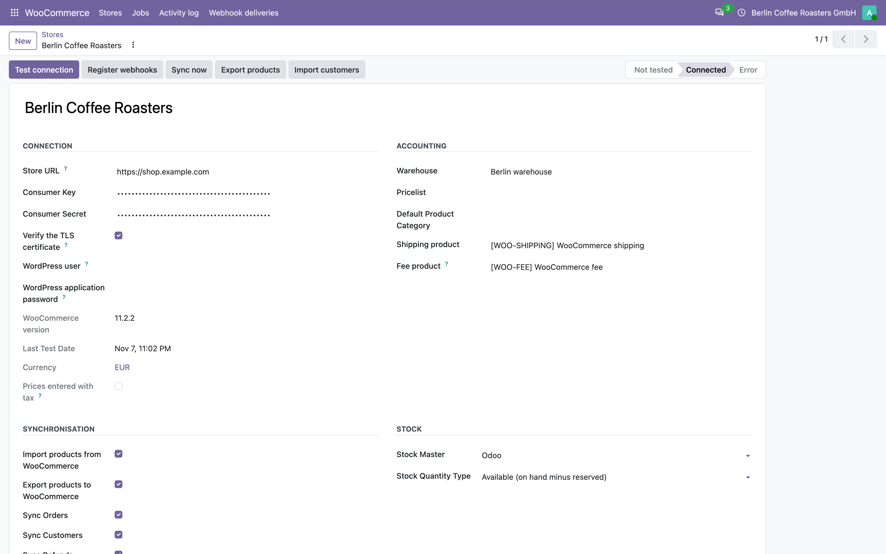
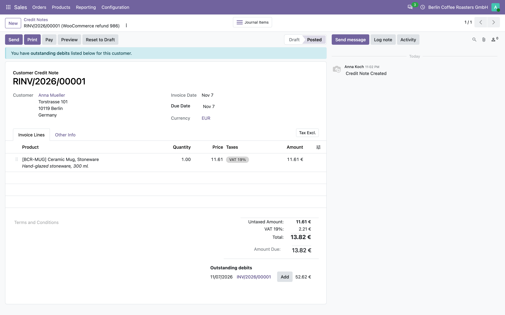
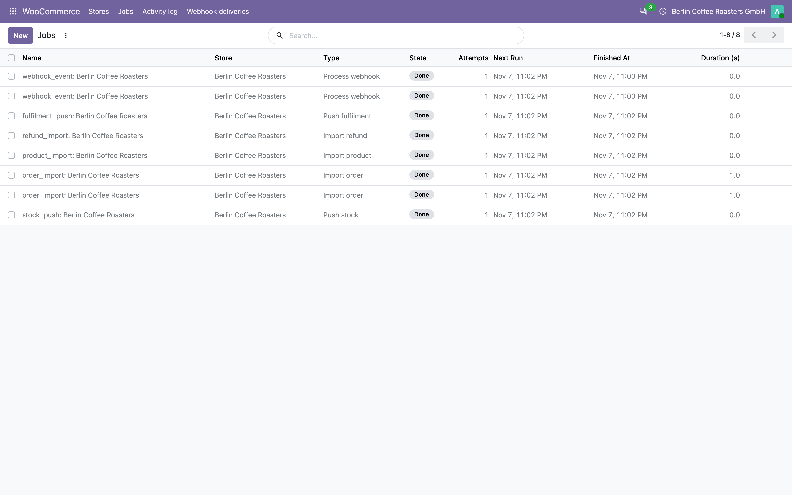
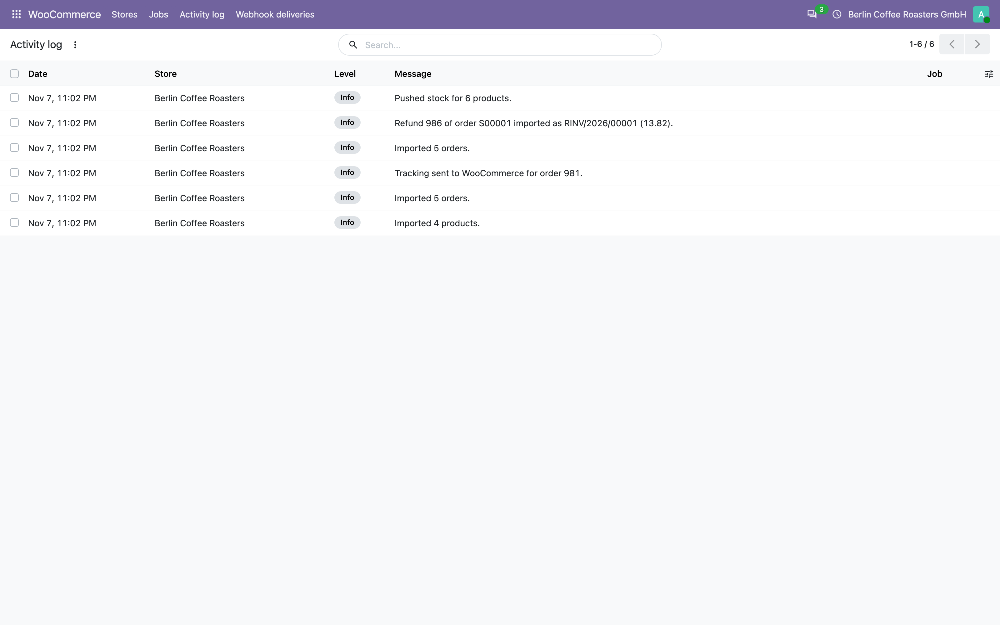
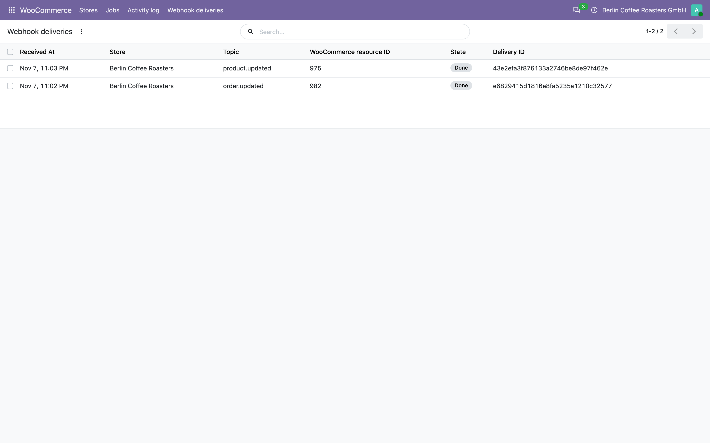

Products, variations, stock, orders, refunds and tracking numbers move between the shop and Odoo on their own. Orders arrive with their taxes, coupons and shipping to the cent, refunds become credit notes, and the shop never sells stock that is already reserved.
Each WooCommerce order becomes a sale order with the customer, the products, the shipping line and the taxes of every line. The customer note and the payment method are kept, and the order can be confirmed on arrival.


Signed webhooks bring a new order within a minute. A poll every 10 minutes repairs anything a webhook missed, and both paths end in the same idempotent import, so an order is never created twice.
Settings > Advanced > REST API > Add key, permission Read/Write. The shop must be served over HTTPS.
WooCommerce > Stores > New: the shop address, the key and the secret, the warehouse and the pricelist.
Odoo reads the WooCommerce version, the currency and the tax convention of the shop.
One button creates the order, product and customer webhooks with a signing secret. It needs a public HTTPS address for Odoo; without it, the poll alone keeps the data in sync.
Order and product polls run from the start. Stock push, stock pull, catalogue export and customer import are installed disabled: nothing is written to a live shop before you decide.

WooCommerce has no refund webhook, so the connector reads refunds from their order. As soon as an invoiced order carries a refund without a credit note, one is created and posted.

The parent of a variable product is skipped: its variations carry the stock.
Every call to the shop is a job with its state, attempts and last error. Failed jobs back off and retry, a crashed worker cannot hold a job forever, and each job runs in its own transaction. Retry, cancel or run a job from the list.


Imports, exports, warnings and failures, with the HTTP status and the WooCommerce error code when something goes wrong. A support question starts here, not in the server log.
Each delivery is checked with its HMAC-SHA256 signature over the raw body, deduplicated by its delivery id, answered at once and processed by the queue.

Two-way Sync for WooCommerce 1.0.3 · POLISHCHUK & SONS LTD · rex.cy · License AGPL-3.0 · WooCommerce is a trademark of Automattic Inc.; this module is not affiliated with or endorsed by Automattic.